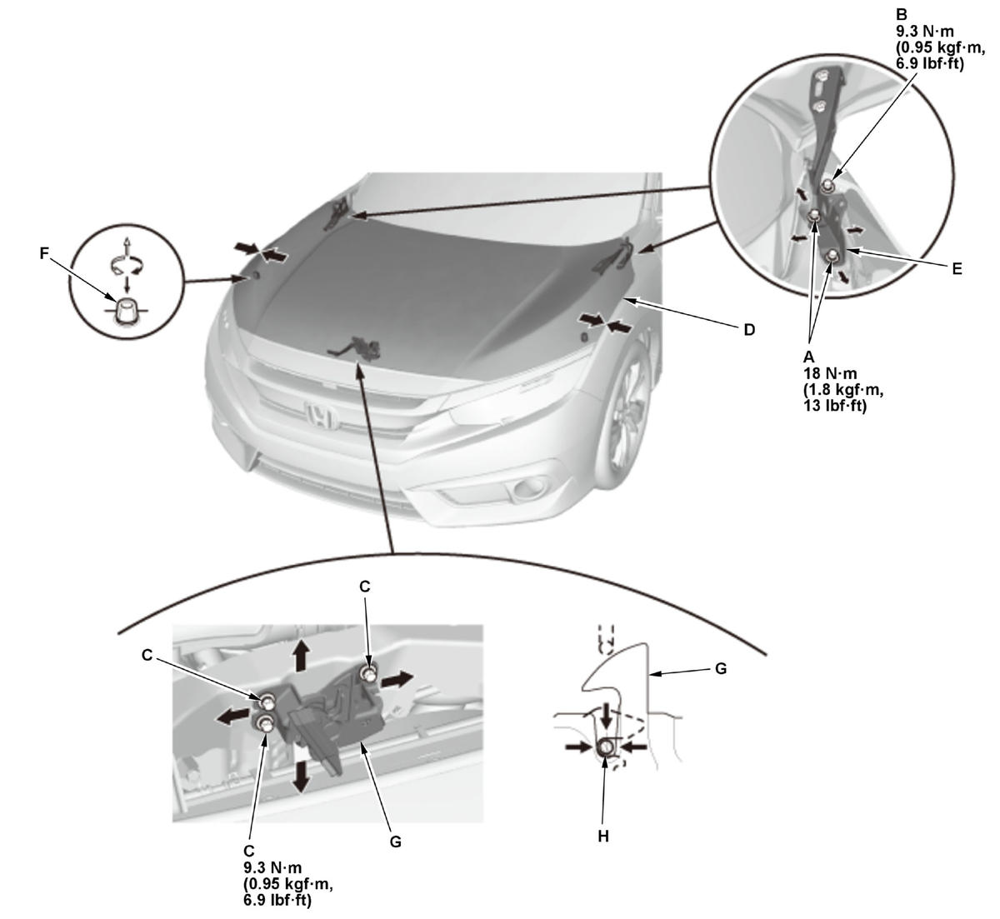

Hood Adjustment: Adjustment
- Front Grille Cover - Remove
- Hood - Adjust
1. Slightly loosen the hood hinge mounting bolts (A, B) and the hood latch mounting bolts (C).

Courtesy of HONDA, U.S.A., INC.2. Adjust the hood (D) alignment in the following sequence:
- Adjust the hood right and left, as well as forward and rearward, by using the elongated holes in the hood hinges (E).
- Turn the hood edge cushions (F), in or out as necessary, to make the hood fit flush with the body at the front and side edges.
3. Adjust the hood latch (G) to obtain the proper height at the forward edge, and move the latch right or left until the striker (H) is centered in the latch.
4. Tighten each bolt to the specified torque.
5. Check that the hood opens properly and closes securely.
6. Apply the touch-up paint to the hinge mounting bolts and around the hinges, and let the paint dry.
7. Apply the multipurpose grease to the hood latch and the hood hinges as indicated by the arrows. - Front Grille Cover - Install